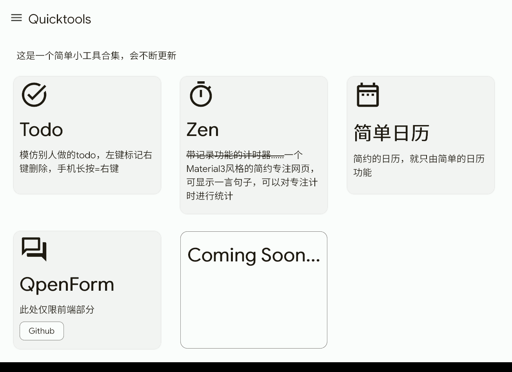
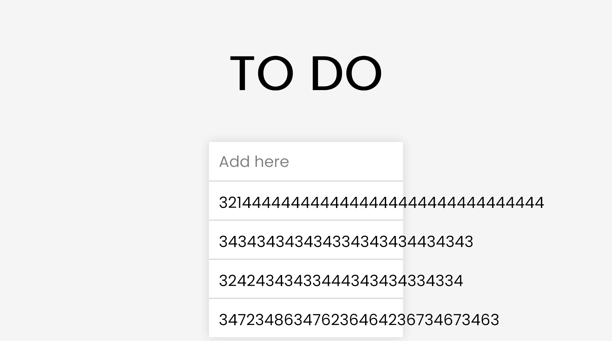
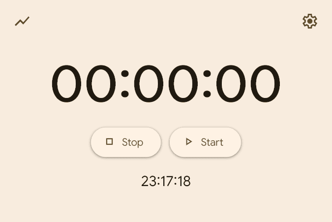
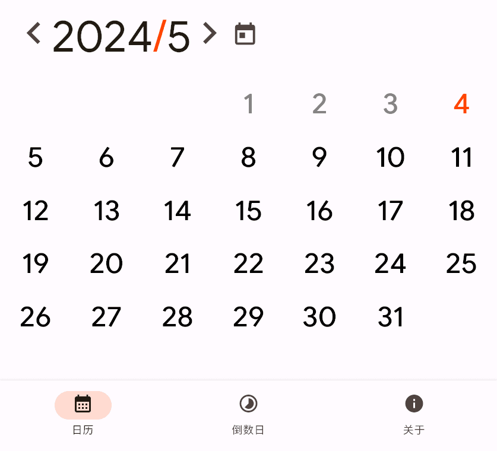
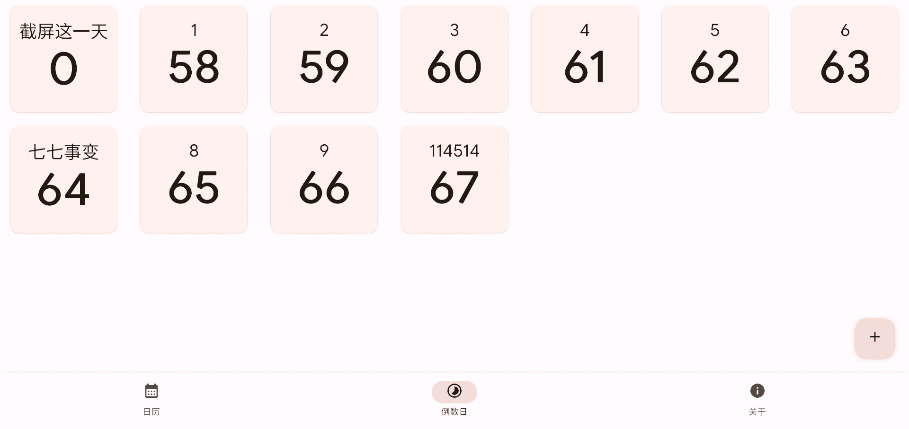
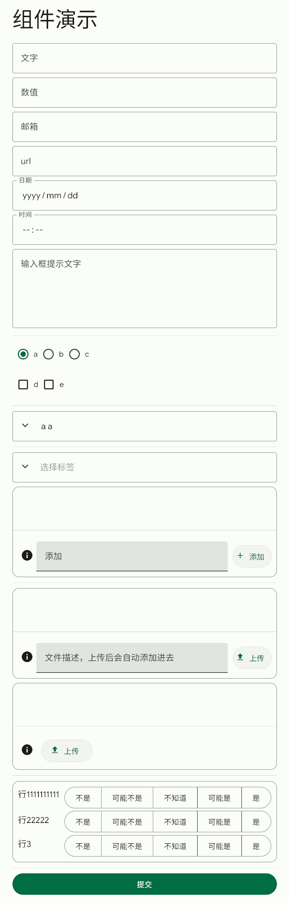

第一批Quicktools正式上线
好不容易抽空出来做的东西，大量使用了Material Design 3，非常的好看
感觉非常有用，实际没啥卵用
遇事不决，先开源 https://github.com/for-the-zero/quicktools
不，你直接进去部署好的吧：https://ftz-tools.netlify.app/

介绍都写上去了，我干嘛还要写这玩意啊
那我说点别的吧！
TODO

首先，不知道为什么，preventDefault不管用，导致你得先加载一下
然后这css写的也不是很好……
这是我在学习h5的时候看到的一个简单示例就尝试复刻一下
然后就是这样子
刷新之后这些东西都在的，这里用的是localStorage
……没什么好说的了
算了！下一个！
Zen

本来想要做一个自律软件，正计时记录学习，做出来了，用不用是另一回事
这里用了moment.js获取时间戳和计算时间戳，谷歌官方的Material Web搞界面
甚至支持一言句子显示（时间上面，图中没有开启）
点击左上角按钮进入下一个页面，用echart显示最近10次的时长曲线（还是localStorage）
当初被这jsd搞得好惨，一开始可以访问，后来不行了
换镜像，结果没多久镜像寄了……后来又换了一个，就行了
日历

第一个界面：普通的日历
可以一键跳转：上下一个月和今天这个月
点击数字还可以输入数字跳转

第二个界面倒数日，非常简单
偷懒，输入日期的东西直接把字符串扔给new Date()
同学：好看欸
……
同学：好玩 为啥没有农历
我：懒 加上之后不简洁
……
同学：为什么没有周一周二那排东西
我：从左到右是周日到周六不应该都知道吗（doge
同学：谢谢，被嘲讽了
震动
根本没搞css，界面非常简陋
别问，问就是懒
笑死，大部分都是通义千问做的
用的是navigator.vibrate
第一个页面选歌并播放
顺便放了一排按钮直接震动
播放用了FFT
通过变化量控制震动
效果一般
第二个页面空白
但是根据手机触屏第一根手指滑动的速度震动
就这么简单
注：部分浏览器会屏蔽这个接口
因为：
警告：
你的浏览器版本过低
下载最新XX浏览器
QpenForm
重头戏，而且单独开源https://github.com/for-the-zero/QpenForm
（quicktools只有前端部分）
演示填写example/1.md和example/2.md
支持一下组件：

还是mdui做的界面，用markdown-it渲染，还加了三个自己的语法
后端是Flask+sqlite3
- 通过query获取表单文件
- 表单文件是markdown，自由度高，限制少
- 10秒自动保存
- Material You设计控件
- 支持文件上传等控件
- 支持防止重复提交（前后端都检测）
- 后端使用SQLite存储数据
具体可以看README.md（去上面那个GitHub链接）
突然不知道写什么了